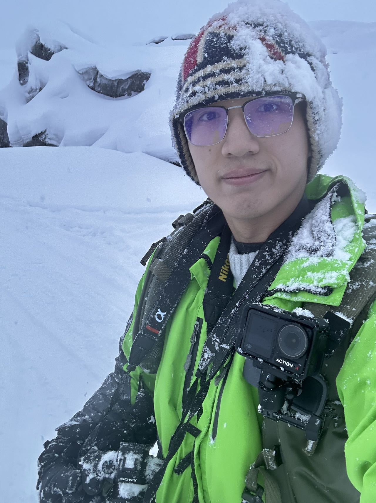

About
Greetings! I'm Harris Wu, a spirited adventurer hailing from China. My heart beats for exploration, and my trusty camera is my companion on journeys through captivating landscapes and diverse cultures. Photography isn't just a hobby; it's a way to freeze time and preserve cherished memories.
Currently, I'm on the thrilling path of Computer Engineering at Rose-Hulman Institute of Technology, embracing the intricate world of algorithms and innovation. As a senior student, I've delved deep into the realms of coding, hardware, and software, constantly seeking to unravel the mysteries of technology.
Beyond the confines of academia, my spirit craves the uncharted territories of travel. Each destination presents an opportunity to immerse myself in new traditions, tastes, and experiences, enriching my understanding of the world.
In this ever-evolving journey, I relish challenges, finding solace in problem-solving and the continuous pursuit of knowledge. Outside the digital and geographical realms, I find joy in connecting with people, sharing stories, and learning from diverse perspectives.
With an insatiable curiosity and a fervent desire to make a meaningful impact, I aim to fuse my technical expertise with the boundless possibilities of the world. Life, to me, is an intricate mosaic of moments waiting to be explored and captured.